御前ヶ遊窟
| 日付 | 2023年6月9日（金） - 2023年6月10日（土） | ||
|---|---|---|---|
| 山域 | 越後 | ||
| メンバー | 単独 | ||
| 山行形態 | 前夜泊日帰り | ||
| アクセス | 車 | ||
| ルート (Map) |
|
【1日目】【2日目】
金曜が休みだったため、今週末は3連休。
あまり天気予報はよくないが、土曜日に新潟の方が晴れそうだったため、
前夜泊で新潟の山に登ることにする。選んだのは御前ヶ遊窟。
遥か昔に読んだハイグレードハイキングという本に載っていた山で、
その本で一番目を引いたのが、この御前ヶ遊窟だった。
余りにも不便な場所にあるため、なかなか行く機会がなかったが、
この機会に行ってみることにする。
1日目
本日は移動日。家で昼食を取ったら出発する。
早めに着いたので、鳥屋野潟公園に寄り道する。駐車場は無料だ。
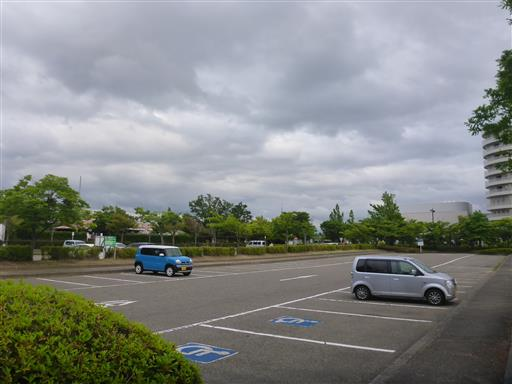
余り見慣れない遊具。
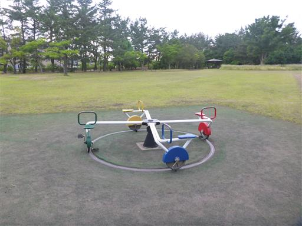
広大な広場。閑散としている。
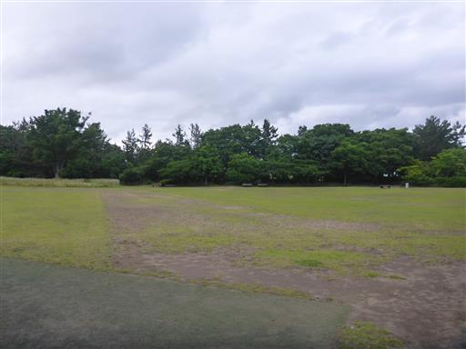
大木の周りに花が植えられている。
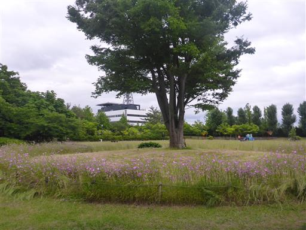
日本庭園。
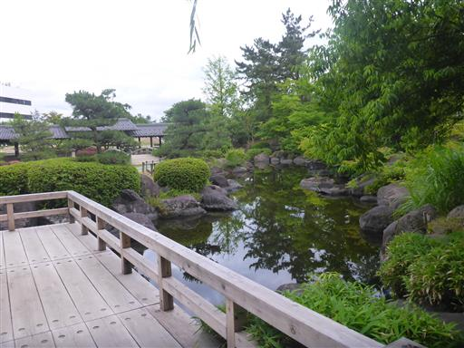
ここは水が透き通っている。水が湧き出しているのだろうか？
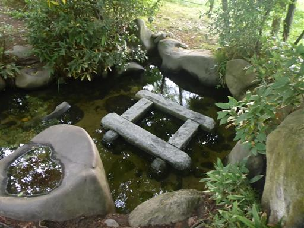
鳥屋野潟を見渡す。草が生い茂っていて近づくことはできない。
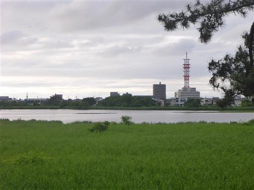
巨大な灯篭。
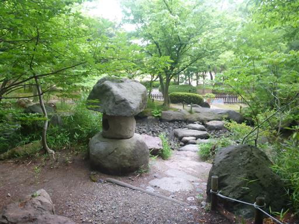
本日の夕飯は「五頭の山茂登」で。公園から近いので歩いて移動。
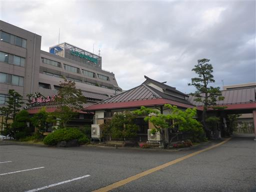
カウンター席に通される。なかなか雰囲気の良い店だ。
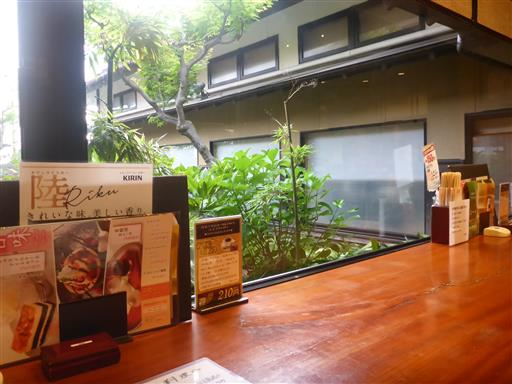
夕飯後も歩いて駐車場に戻る。雲が地面に付きそうなほど低い。
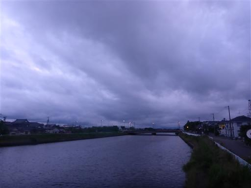
本日は「道の駅阿賀の里」で車中泊しようと思っていたが、2km手前で大渋滞に引っかかる。
何事かと思ったら、突然右手で花火が上がる。本日は花火大会だったようだ。
「道の駅阿賀の里」は観光客で満車。仕方がないので、その先の「道の駅みかわ」まで移動する。
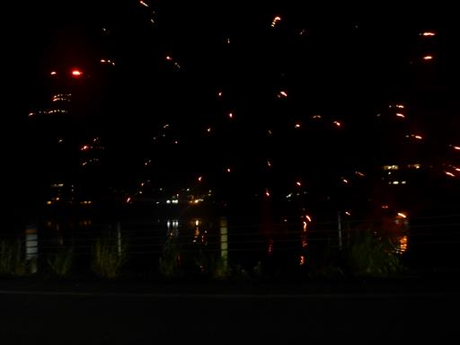